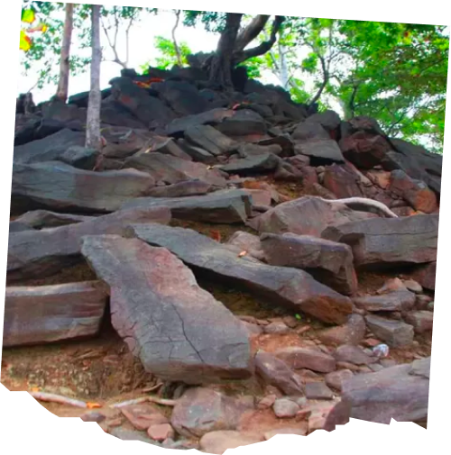

Terletak di Kecamatan Bungatan, Desa Patemon memiliki daya tarik berupa situs purbakala seperti batu mesagit (batu berundak), sarkofagus (peti mati zaman batu) dengan jumlah yang cukup banyak. Konon, sarkofagus di Desa Patemon merupakan sarkofagus terbesar di pulau Jawa. Selain situs purbakala, Desa Patemon juga terkenal dengan potensi alam yang berupa kebun aren, sebagai komoditas utama wilayah tersebut.
